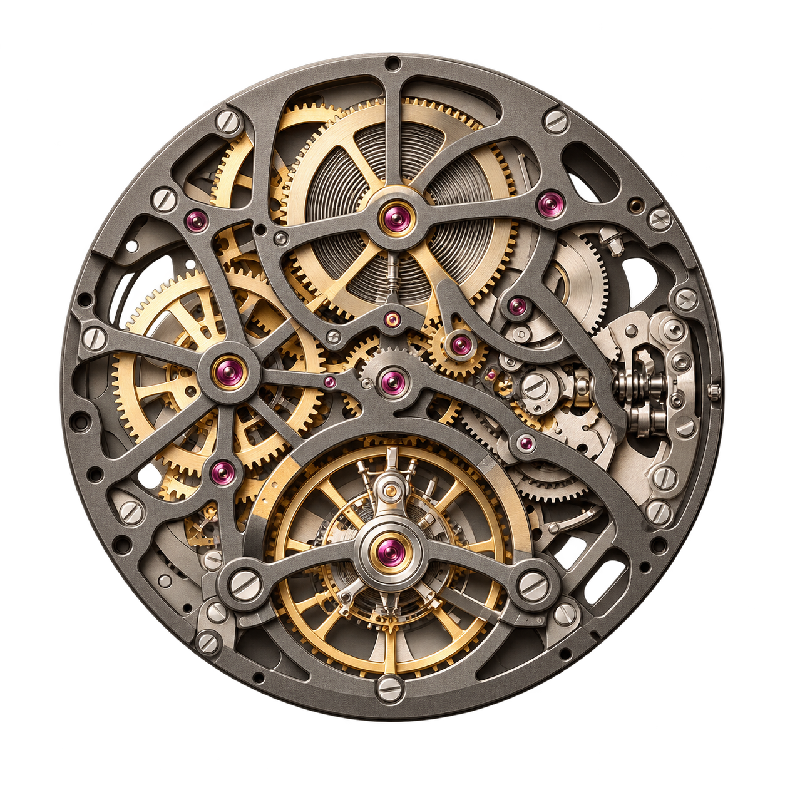
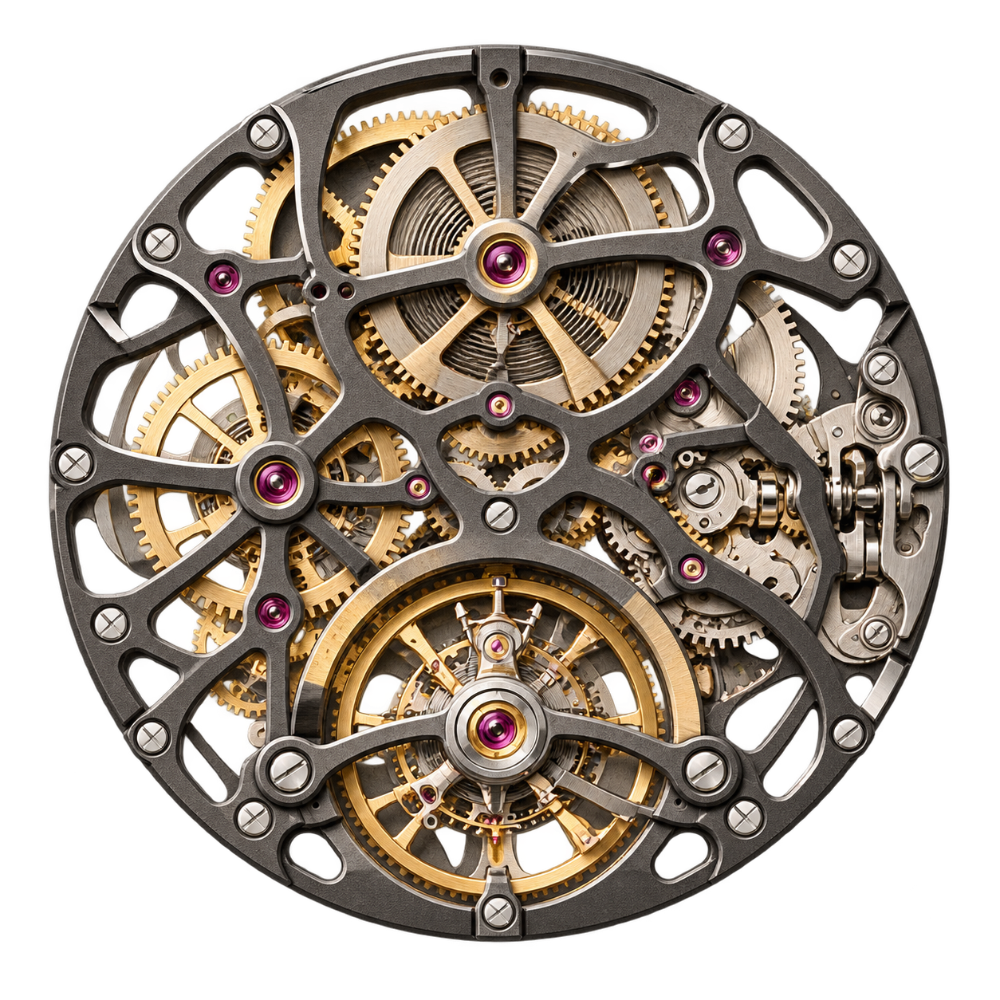
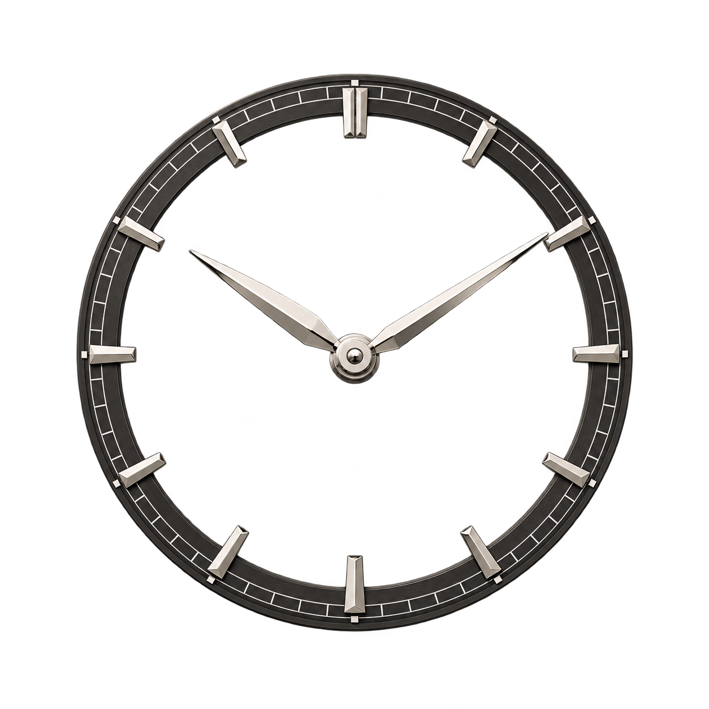
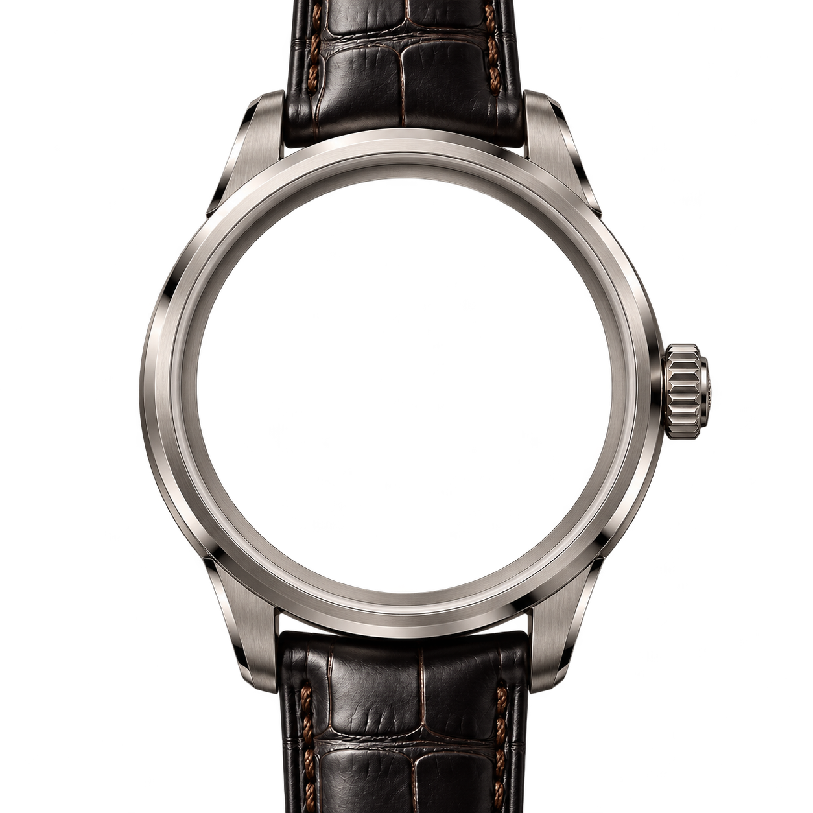

INTRODUCING CALIBRE 01
Time, in its
most honest
form.
Nothing concealed. Nothing superfluous.
A mechanical expression of everything
we believe a watch should be.




THE BEAUTY OF WHAT LIES WITHIN
A thousand decisions.
One singular expression.
Before a watch can measure time, it must be given time.
Discover the layers of a creation shaped from the inside out.
It begins
with energy.
A coiled spring. A measured release. The movement transforms stored energy into a quiet, constant rhythm. Every wheel has a purpose. Every fraction matters.
THE HAND-WOUND MOVEMENTStrength in
what remains.
Openworked bridges reveal rather than conceal. Sculptural lines hold the mechanism in balance, while polished edges catch the light with the slightest turn of the wrist.
SKELETONISED BRIDGES · POLISHED BEVELSA language
of restraint.
Slender hands float above an intricate landscape. A quiet chapter ring brings clarity to complexity, leaving the movement itself to tell the greater story.
OPEN DIAL · FACETED HOUR MARKERSEverything.
In its place.
Brushed titanium frames the architecture within. A supple leather strap completes the composition. Individual elements become a single, considered whole.
TITANIUM CASE · TEXTURED LEATHERTHE COMPLETE EXPRESSION
MAISON VALLÉE / COLLECTION 01Made to be
looked into.
Some watches tell the time.
Others tell you something about yourself.
Calibre 01 is an invitation to look closer. To appreciate the deliberate. To find beauty in the way things work.
Brushed titanium
Mechanical · hand-wound
Fully openworked
Quietly extraordinary